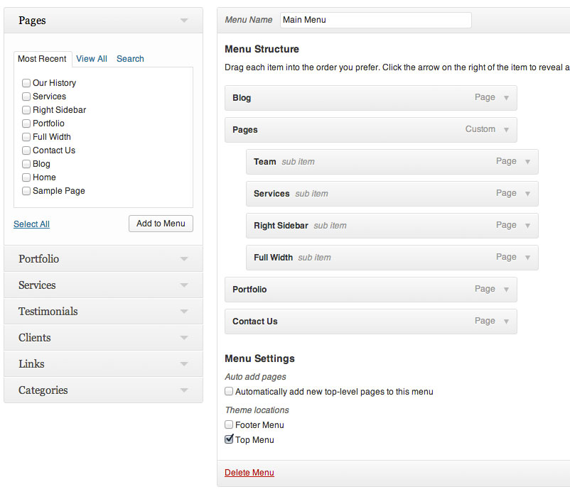

This is the theme help documentation file. Please search this before contacting for support. Note: We do not support theme customizations beyond it's original functionality & appearance.
Live Theme DemoA few words on getting started with your newest Bootstrap project, package files & theme support.
After downloading the theme package open the folder named “StanleyWP-Package” and un-zip the folder. Inside the package you will find the following files:
To install your brand new Bootstrap theme (that you’ve already downloaded and un-packed) you have two primary options: FTP or WordPress theme upload from the Dashboard.
To manually upload your new Bootstrap theme, login with your credentials to your website and locate the /wp-content/themes directory on your server. Upload the un-zipped theme folder into the: yourdomain.com/wp-content/themes
Please ensure you are uploading the un-zipped theme folder, not the entire package downloaded.
Follow the steps below to upload your theme from the WordPress dashboard.
Please ensure you are uploading the zipped theme folder, not the entire package downloaded.
If you have a problem with the theme or found a bug please let us know by sending us an email and we will help sort out your problem.
We tested the theme with major browsers and different devices. Unfortunately it is impossible to run every test scenario.
Note: We are happy to help with setup and any bugs you may stumble upon, but we cannot support CSS modifications to your theme.
A quick look at setting up your custom menu for the main navbar.

This theme includes an Administration panel that will allow you to change various aspects of the theme such as the logo, homepage layout, portfolio options...etc.
To access the theme options panel simply...
By default this theme will show your site title in the logo area if no custom logo image has been uploaded. If you wish to add your own image logo simply do the following...
This theme comes with some custom post types that allow you to create custom sections on your website.
In the image below you can see where your custom post types are located.
Once you add your portfolio items, to see them on your site you must add a new page and select the appropriate template - as explained in the sections below
To create your portfolio page follow the steps below
To add portfoio items to the portfolio page, follow the steps below
Use the portfolio options under the post editor to upload your images, display custom title, and enable/disable portfolio categories.
Create a Blog page to automatically display your blog posts.
To create your blog page follow the steps below
Setting up the homepage is as easy and drag and drop.
To create your homepage by following the steps below
By default this theme will automatically show your recent blog posts on the homepage. To set your newly created homepage to the default homepage follow the steps below.
The homepage is fully customizable via the theme panel. If you go to Apperance --> Theme Options and click on the Homepage tab you can see all the homepage options. Easily move the modules around to enable/disable them as well as customize via the available fields/options.
Note: Click on a Module to drag/drop it to the enabled/disabled column.
Page Content- This will display the content and featured image from the page you have set as Homepage.
Portfolio - Shows your latest portfolio items.
Setting up the included pages
Use the options section under the post editor to add the different columns on the about page template.
To sum it all up, this is dedicated to the theme templates, image files and other sources / credentials for our theme.
This theme does not include a PSD file.
The demo uses the plugin WP User Avatar to upload custom images to use for your avatars. You can find it here: http://wordpress.org/plugins/wp-user-avatar/